Toutes les étapes de la création du site, des sources consultées jusqu'aux tests. Un CV en ligne doublé d'une offre de services. Version française ; la version anglaise suivra.
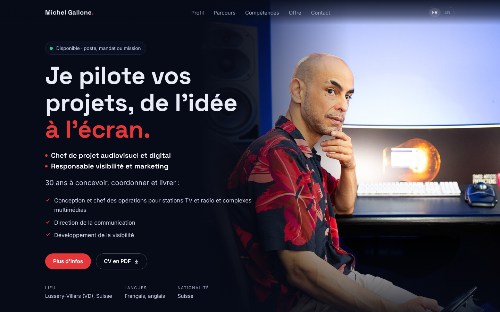
Dépôt : github.com/sowattmusic/michel_cv · branche claude/affectionate-euler-tp4710
Document mis à jour le 28 octobre 2026
Créer un site web pour Michel Gallone à partir de son CV et de quatre sources en ligne :
Le site doit être une vitrine de type boutique qui « vend » Michel sur le marché du travail. Il est rédigé entièrement en français, et une version anglaise sera faite ensuite. Chaque étape est documentée dans ce PDF, conservé dans l'environnement de travail et dans le dépôt GitHub.
Le dépôt sowattmusic/michel_cv contenait déjà :
| Chemin | Contenu | Utilisé pour le site |
|---|---|---|
renders/*/ | Quatre variantes du CV (ingé son, chef de projet, avec ou sans photo), en HTML et PDF | Oui : parcours, dates, références, langues, coordonnées |
sources/photos/ | Trois photos de Michel dans son studio (DSC_8780, 8782, 8809) | Oui : toutes les images du site |
sources/tech_multimedia_Gallone.pdf | Ancien CV | Indirectement, via les CV refaits |
conversation/ | Historique de la création des CV | Oui : choix déjà faits (e-mail, mise en page) |
La source de référence est le CV « chef de projet avec photo », le plus complet et le plus récent (il inclut Sowatt Music Sàrl, Route 108 et l'association SAP).
Chaque source a d'abord été lue avec un outil de lecture web simple, puis, en cas d'échec, avec un navigateur Chromium sans interface (pour les pages construites en JavaScript) ou avec l'API publique du site.
| Source | Méthode | Résultat | Ce qu'on en tire |
|---|---|---|---|
| Lecture web : erreur HTTP 999 (LinkedIn bloque les robots). Pas de nouvel essai possible sans être connecté. | Échec | Seule l'adresse du profil est utilisée (lien dans le pied du site). Le contenu du profil n'a pas pu être lu. | |
| linkin.bio/mg | Lecture simple vide (page en JavaScript), puis Chromium sans interface | Réussi | Titre « Producer - Engineer », liens Instagram, LinkedIn, Facebook, e-mail michel@sowattmusic.com, Sowatt Media, Route 108, Discogs et lien vers l'article Headliner. |
| Discogs | Page web : erreur 403. API publique api.discogs.com : réussi | Réussi | Biographie, variantes du nom, liens, 77 entrées de crédits (51 parutions distinctes, 1995 à 2026). |
| Headliner (Issuu) | Le lecteur Issuu n'expose pas le texte. L'article a été trouvé sur headlinerhub.com grâce au lien de linkin.bio, puis lu avec Chromium. | Réussi | Interview complète « From pop icons to pristine sound » par Liz Wilkinson : parcours, souvenirs avec Mutt Lange, matériel, méthode de travail. |
| sowattmedia.com, route-108.com, sowattmusic.com | Consultés pour compléter. Connexion refusée ou erreur 403. | Échec | Liens conservés sur le site, sans contenu supplémentaire. |
Les données récupérées sont archivées dans le dépôt pour qu'on puisse les vérifier :
sources/web/headliner_article_2025.txt : texte de l'articlesources/web/linkin_bio_mg.txt : texte et liens de la page linkin.biosources/web/discogs_artist.json et discogs_releases.json : réponses de l'API Discogsdocs/journal/capture_linkinbio.png : capture de la page linkin.bio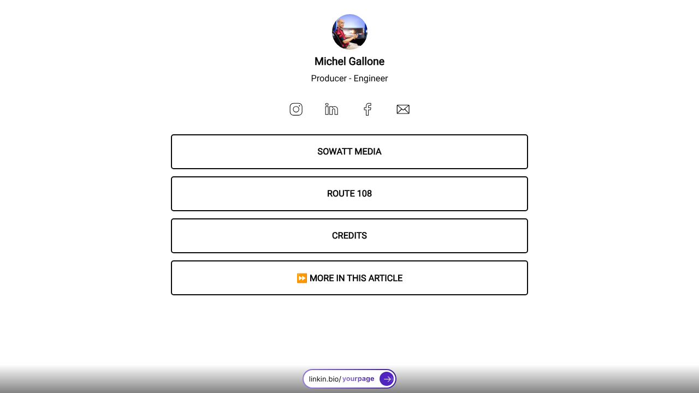
Producteur, ingénieur du son et directeur technique audiovisuel, basé à Lussery-Villars (VD). Plus de 30 ans de métier, dans quatre pays (Suisse, France, Royaume-Uni, Maroc). Français langue maternelle, anglais courant.
| Source | Information nouvelle |
|---|---|
| Discogs | Crédits vérifiables : Shania Twain (Up!, mixage ; Ka-Ching!, remix), Britney Spears (Don't Let Me Be The Last To Know, mixage), Céline Dion, The Corrs, Michael Bolton, Krokus (mixage), Marla Glen (mixage, 1995). Productions et mixages récents : STARVINSKY, Huey V, Alejandro Reyes, Antony Trice, Hypsign, Uranian Stone, Tricia Cordero, Jay Derson. Enregistrement de The Art Of Chopin (Elizabeth Sombart, Royal Philharmonic Orchestra). |
| Headliner | Production et coordination d'enregistrements à Abbey Road avec Elizabeth Sombart et le Royal Philharmonic Orchestra. Enregistrements classiques avec Philippe Entremont. Matériel : Pro Tools, Logic, Merging Horus, DAD, Prism Sound, Neumann KH 420, Dangerous Music 2BUS+, intérêt pour l'Audio over IP. Citations sur Mutt Lange, la transparence du son et la méthode. |
| linkin.bio | Titre public « Producer - Engineer », e-mail professionnel michel@sowattmusic.com, Instagram et Facebook, Sowatt Media. |
Pour que le site « vende » Michel, ses compétences sont présentées comme une vitrine de domaines d'expertise. Le visiteur les filtre et, d'un clic sur « En discuter », écrit directement à Michel au sujet du domaine choisi. (La première version comportait un panier, retiré ensuite : voir l'étape 12.)
| Prestation | Catégorie | Preuves affichées |
|---|---|---|
| Mixage & production musicale | Musique | STARVINSKY, Antony Trice, Hypsign, Alejandro Reyes |
| Enregistrement classique & acoustique | Musique | Elizabeth Sombart, Philippe Entremont, RPO, Abbey Road |
| Direction technique radio & TV | Broadcast, Conseil | M Le Media, matinales en direct (Canal+) |
| Son & vidéo pour l'événementiel | Broadcast & direct | 2m2c, SwissTech Convention Center, Beaulieu, Royal Savoy |
| Conception de studio & gestion de projet | Conseil | Hana Road, Digital Media Partners avec Tom Hidley, Sully Sound |
| Vidéo, post-production & communication | Image | Rouge TV, Walt Disney, M6, TF1, Sowatt Music |
Aucun prix n'est affiché : chaque domaine indique la forme de collaboration possible (mission, mandat ou poste) et son échelle (au titre, à la journée, au projet…).
Les couleurs viennent des photos de Michel : un studio baigné de lumière bleue et sa chemise rouge et noire. Le site est sombre, comme une régie, avec le rouge réservé aux actions et aux accents.
Bleu nuit #070b18 Bleu lueur #4f7dff Rouge #e5373a Texte #e9ecf5
site/assets/img/.Site statique, sans outil de construction : il s'ouvre directement dans un navigateur et s'héberge n'importe où (GitHub Pages, Infomaniak…).
site/
├── index.html redirige vers fr/
├── fr/index.html la page en français
├── en/ (à venir) la version anglaise
└── assets/
├── css/style.css styles, responsive, palette
├── js/main.js menu, filtres, liens « En discuter », animations
└── img/ photos optimisées
fr et en) dans main.js ; les textes anglais sont déjà prêts.hreflang anglaise est prête, en commentaire.Titre et description de page, balises Open Graph pour le partage sur les réseaux, et données structurées schema.org « Person » (métier, adresse, liens LinkedIn, Instagram, Facebook, Discogs).
La page a été ouverte dans Chromium sans interface, en format bureau (1440 × 900) et mobile (390 × 844). Vérifications faites :
| Problème constaté | Correction |
|---|---|
| Accueil : le texte recouvrait le visage de Michel, placé à gauche de la photo. | Mise en page en deux parties : texte à gauche, photo à droite en fondu. Sur mobile, la photo passe au-dessus du texte. |
| Le menu disparaissait sur la partie claire de la photo. | Dégradé sombre ajouté derrière le menu. |
| Krokus (2004) apparaissait sous « Sowatt Music », et le bloc « Avec Mutt Lange » affirmait plus que ce que dit Discogs. | Titres des deux listes rendus exacts : « Signatures internationales » et « Productions & mixages ». |
| Section Presse : la photo coupait le visage. | Recadrage de l'image. |
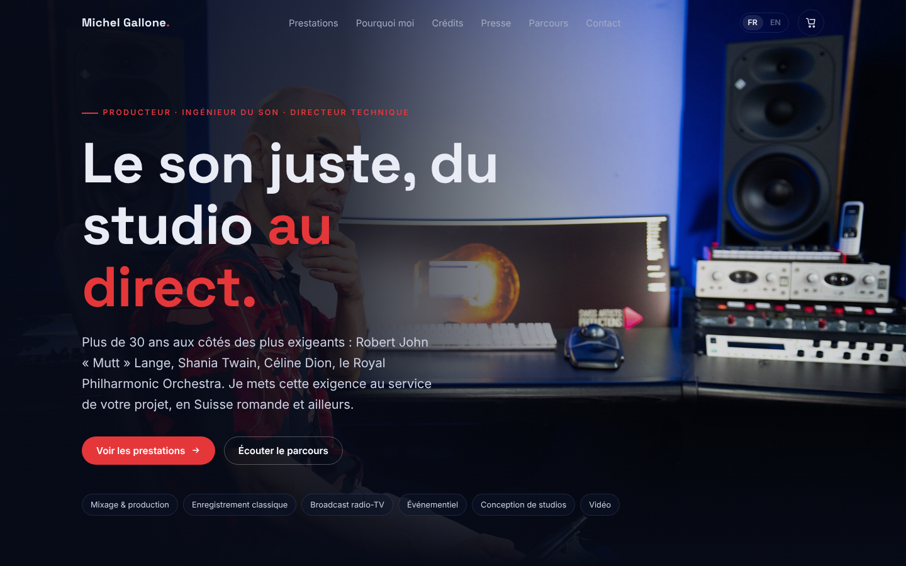
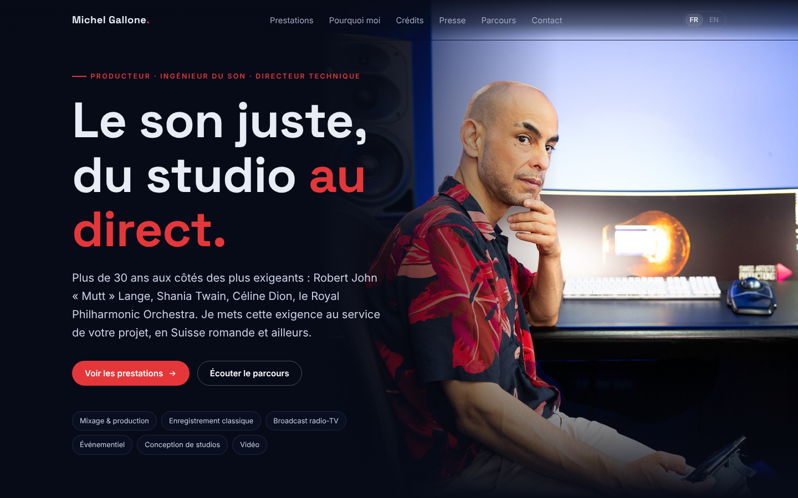
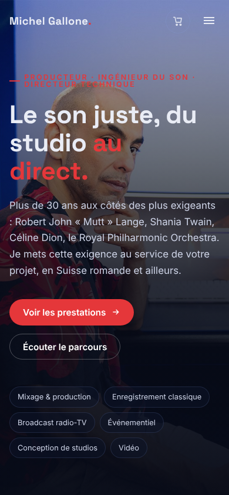
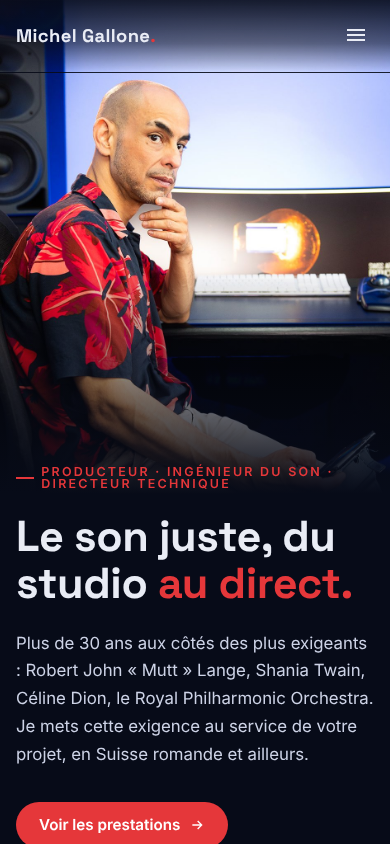
| Sujet | Choix fait | À confirmer |
|---|---|---|
| Adresse e-mail | Réglé à l'étape 15 : contact@michelgallone.ch. | Mettre à jour le CV en PDF. |
| Contenu LinkedIn | Non lu (LinkedIn bloque les robots). | Envoyer un export PDF du profil (LinkedIn › Plus › Enregistrer au format PDF) pour compléter. |
| Rôle sur les disques « crédités » | Écrit « Crédité » quand Discogs ne précise pas le rôle. | Préciser le rôle exact sur Shania Twain, Céline Dion, The Corrs, Michael Bolton… |
| Abbey Road et Philippe Entremont | Mentionnés d'après l'interview Headliner. | Vérifier la formulation. |
| Forme de collaboration | Chaque domaine indique « mission », « mandat » ou « poste ». | Michel cherche-t-il surtout un poste salarié, des missions, ou les deux ? |
| Citations Headliner | Traduites de l'anglais par nos soins, avec lien vers l'article. | Relire la traduction. |
| Sowatt Media | Lien non affiché (site inaccessible pendant le travail). | Faut-il l'ajouter ? |
site/fr/ vers site/en/, traduire, puis activer le lien EN et la balise hreflang.Ce PDF est produit à partir de docs/journal/journal_de_bord.html. La commande suivante refait les captures du site puis le PDF :
node docs/build_pdf.js
À chaque nouvelle étape (version anglaise, mise en ligne…), on ajoute une section au fichier HTML et on relance la commande.
Retour reçu : « Pourquoi y a-t-il un panier ? Je ne vends rien. »
La première version poussait l'idée de « boutique » jusqu'au panier : bouton « Ajouter » sur chaque prestation, icône de panier dans le menu, tiroir « Ma demande de devis », mention « Sur devis ». Or Michel propose ses compétences, il ne vend pas de produits. Le panier brouillait le message.
| Avant | Après |
|---|---|
| Icône de panier avec compteur dans le menu | Supprimée |
| Bouton « Ajouter » sur chaque prestation | Bouton « En discuter » : e-mail prérempli avec le domaine en objet |
| « Sur devis » | Forme de collaboration : mission, mandat ou poste |
| Titre « Choisissez ce dont votre projet a besoin. » | « Ce que je peux faire pour vous. » |
| Tiroir « Ma demande de devis » | Supprimé ; le contact se fait par e-mail ou téléphone |
Le code du panier a été retiré du HTML, du CSS et du JavaScript. La vitrine reste organisée par domaines, avec les filtres.
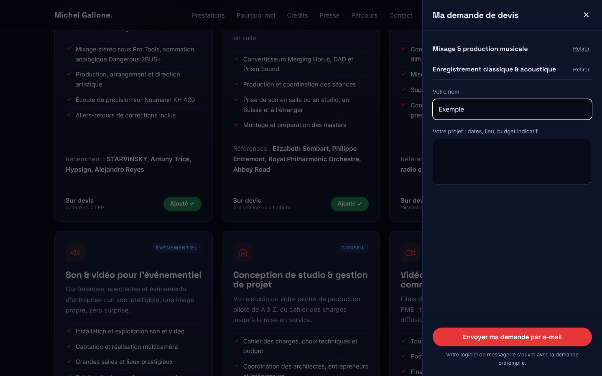
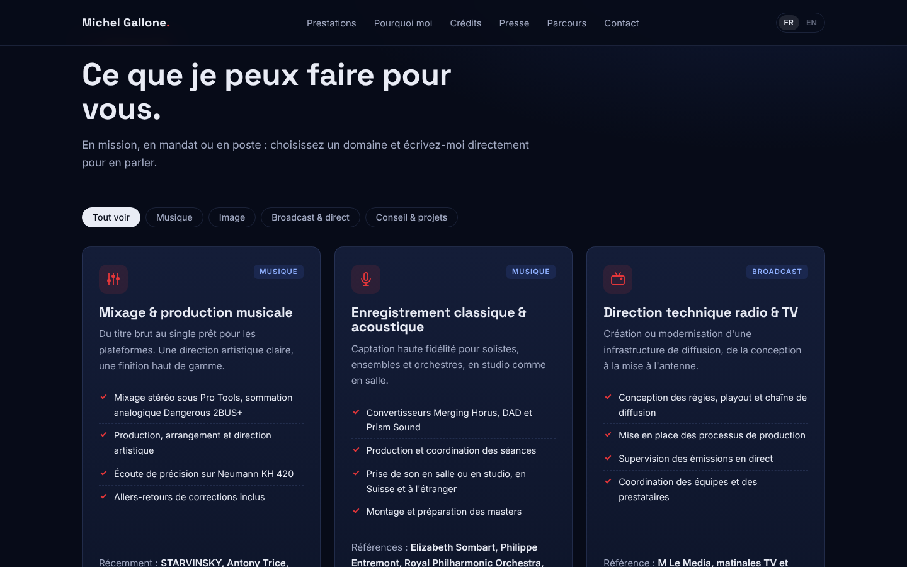
Demande de Michel : repenser le site en mode « curriculum vitae live », orienté marketing digital et gestion de projet. Le défi : trouver le juste milieu entre un CV en ligne et une offre de prestations. Limiter les pages et les boutons au strict nécessaire. Supprimer le bandeau défilant des clients. Le reste était jugé « pas mal » et a été conservé (couleurs, typographies, photos, presse, contact).
| Section | Contenu |
|---|---|
| En-tête | Pastille « Disponible · poste, mandat ou mission », titre « Je pilote vos projets, de l'idée à l'écran. », poste visé « Chef de projet audiovisuel et digital », lieu, langues, nationalité |
| Chiffres clés | 30+ années, 3 infrastructures, 4 pays, 50+ disques |
| Profil | Résumé et trois atouts : gestion de projet, communication digitale, exigence internationale |
| Expérience | Frise détaillée de 1994 à aujourd'hui, réécrite côté pilotage et communication |
| Compétences | Trois familles : gestion de projet, marketing digital et communication, production audiovisuelle. Puis formation, langues, engagement |
| Offre | Trois services seulement, sans bouton : gestion de projet, communication pour les PME, production audio et vidéo |
| Références | L'interview Headliner, deux citations, liens vers l'article et Discogs |
| Contact | Un seul bouton, coordonnées, réseaux |
« Me contacter » et « CV en PDF » dans l'en-tête, « Écrire un e-mail » dans le contact, et le sélecteur de langue. Le menu passe à cinq entrées : Profil, Expérience, Compétences, Offre, Contact.
Le bouton « CV en PDF » télécharge le CV chef de projet avec photo déjà présent dans le dépôt, copié dans site/assets/CV_Michel_Gallone.pdf. Si ce CV est modifié, il faut recopier le PDF à cet endroit.
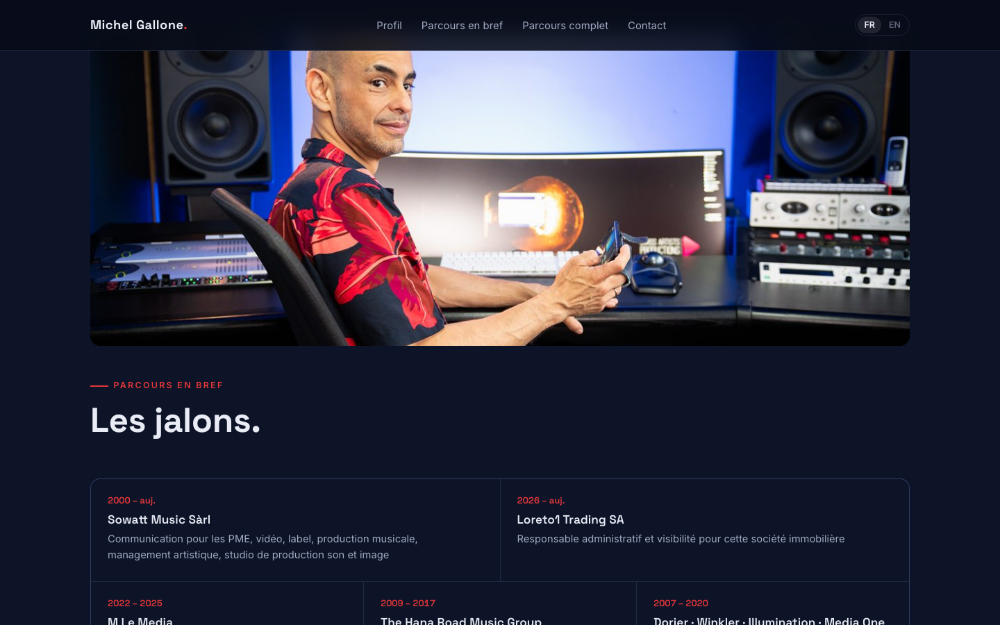
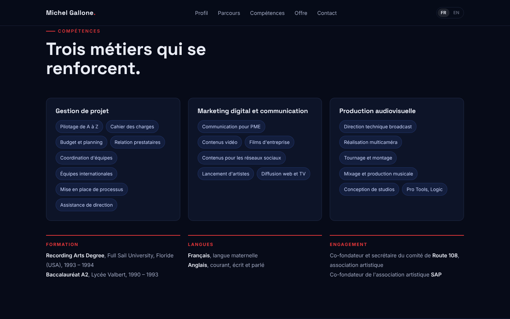
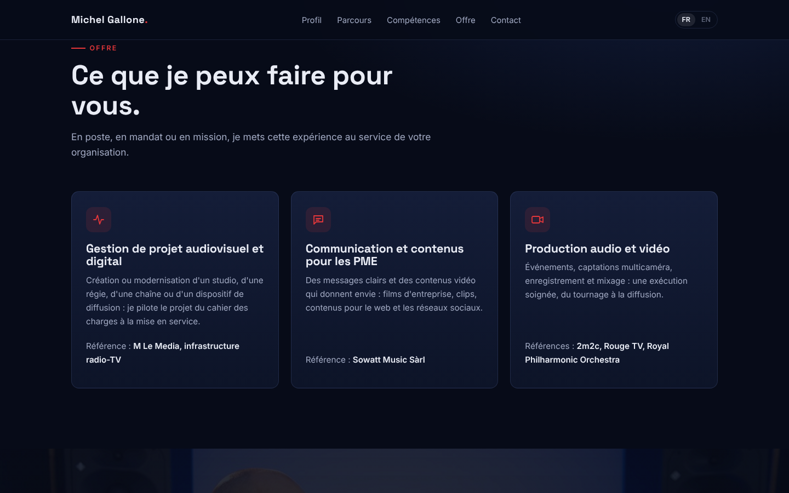
Demande de Michel : ajouter « Responsable visibilité, marketing » à côté de « Chef de projet audiovisuel et digital », dans le même style.
Demandes de Michel :
| Endroit | Changement |
|---|---|
| En-tête | Après « 30 ans à concevoir, coordonner et livrer : », une liste de trois missions avec une coche rouge. La phrase sur Mutt Lange et Canal+ est supprimée. |
| Pied de page | Bloc fixe « Ils m'ont fait confiance » : Universal Music, Canal+, Walt Disney, TF1, M6, Energy (NRJ), Mutt Lange, Shania Twain, Céline Dion, Britney Spears, Bryan Adams, The Corrs, Royal Philharmonic Orchestra, Dorier Group, Winkler, Illumination, 2m2c Montreux. Puis l'e-mail et le téléphone, cliquables. |
| E-mail du site | contact@michelgallone.ch remplace michel@sowattmusic.com partout (section Contact, bouton « Écrire un e-mail », données structurées), pour n'avoir qu'une seule adresse. |
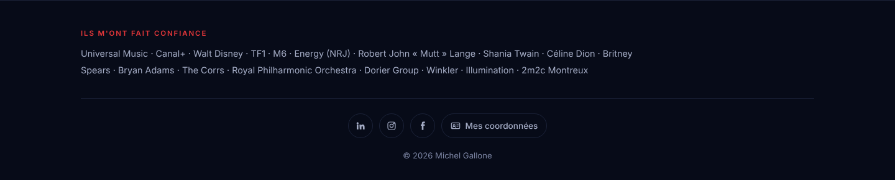
Demande de Michel : une deuxième page où les éléments du CV sont mis en forme de page web, avec le même look. En mode narratif, mais avec des séparations par période et par employeur, comme dans le CV PDF. Elle reprend le CV, les références Discogs des artistes les plus connus et l'article Headliner.
site/fr/parcours.html, mêmes couleurs, typographies, menu et pied de page.En-tête avec photo, puis un sommaire des chapitres cliquable. Chaque chapitre a deux colonnes : à gauche, la période, le lieu et la fiche employeur (comme dans le CV PDF), qui reste visible pendant la lecture ; à droite, le récit, les citations et les crédits.
| N° | Période | Chapitre et sources utilisées |
|---|---|---|
| 1 | 1990 – 1994 | Formation : bac A2, Full Sail University (CV, Headliner) |
| 2 | 1994 – 1999 | Londres, Paris, Marrakech, Montreux : Nomis Studios, Télétota, Digital Media Partners avec Tom Hidley, Ony Media (CV, Headliner) ; Marla Glen 1995 (Discogs) |
| 3 | 1999 – 2007 | Mutt Lange et Sully Sound SA (CV) ; citation sur Mutt Lange (Headliner) ; 10 crédits : Céline Dion, The Corrs, Britney Spears, Shania Twain, Michael Bolton, Krokus (Discogs) |
| 4 | 2000 – auj. | Sowatt Music Sàrl (CV, Discogs) ; 6 productions et mixages récents (Discogs) |
| 5 | 2007 – 2020 | Dorier Group, Winkler, Illumination, Rouge TV (CV) |
| 6 | 2009 – 2017 | The Hana Road Music Group (CV) |
| 7 | Depuis 2012 | Le classique : Elizabeth Sombart, Philippe Entremont, Royal Philharmonic Orchestra, Abbey Road (Headliner) ; The Art Of Chopin 2015 (Discogs) |
| 8 | 2022 – 2025 | M Le Media (CV) |
| 9 | Aujourd'hui | Missions actuelles, engagement, studio, regard sur l'IA (CV, Headliner) ; liens vers l'interview et Discogs |
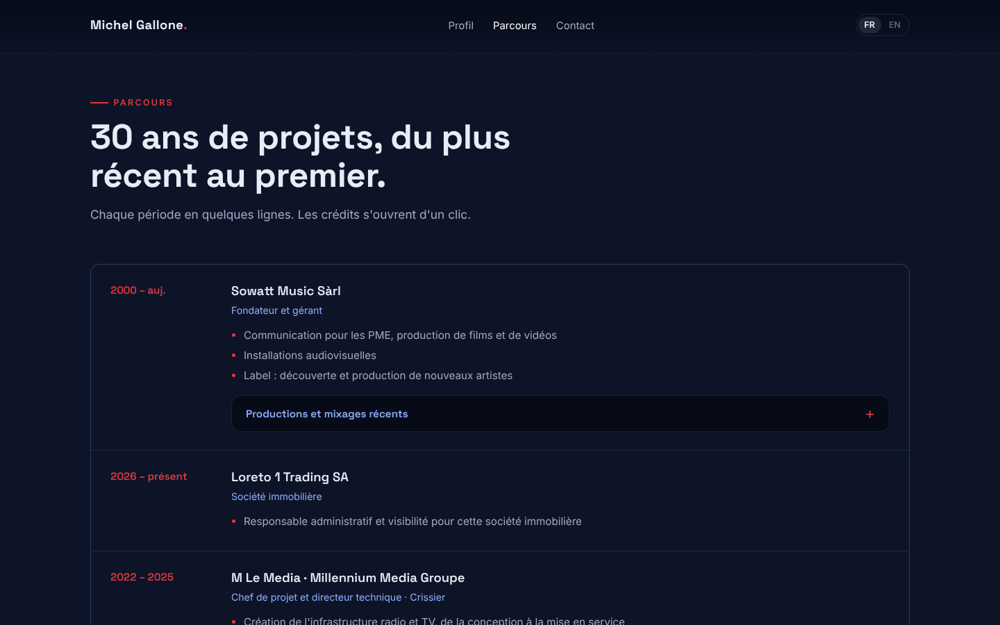
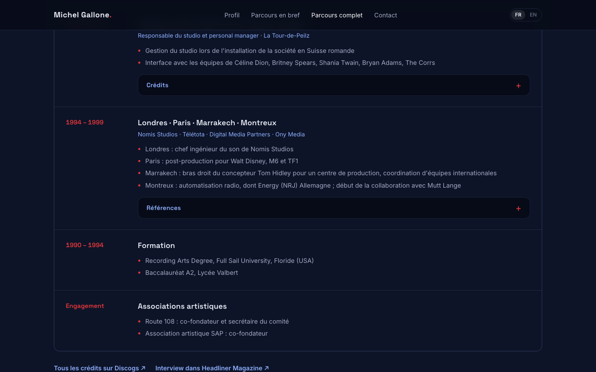
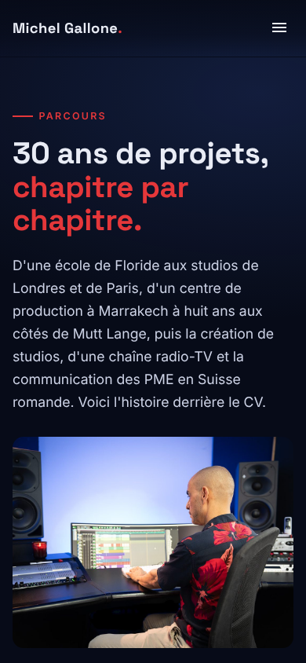
Demande de Michel : remplacer le bouton « Me contacter » de l'en-tête par un bouton « Plus d'infos » qui mène à la page 2, le parcours détaillé.
parcours.html) et « CV en PDF ».Demande de Michel : dans le passage « Montreux » du chapitre 2, mentionner aussi Mutt Lange et les artistes connus : Céline Dion, Britney Spears et Shania Twain.
Demande de Michel : simplifier le chapitre 3. Mettre simplement les références des artistes, et retirer le paragraphe sur l'année 2001.
Constat de Michel : la page 2 semblait en trop, car tout était déjà sur la page 1. Décision : garder les deux pages, avec un rôle distinct pour chacune. La page 1 doit être très concise et ne rien répéter de la page 2.
| Page 1 · la vitrine | Page 2 · le parcours complet |
|---|---|
| Titres, missions, chiffres clés, profil, parcours en bref, compétences, offre, contact | Récit par chapitres, fiches employeurs, crédits Discogs, citations Headliner |
La page 1 passe d'environ 7 300 à 5 700 pixels de haut sur ordinateur.
Demande de Michel : sur la première page, s'arrêter avant « Compétences », qui est en trop.
La page 1 passe à environ 3 200 pixels de haut sur ordinateur.
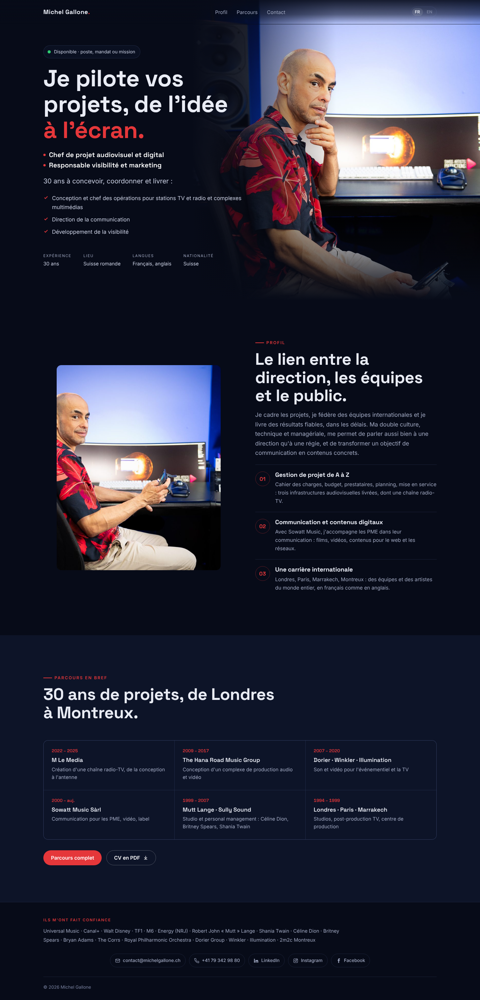
Demande de Michel : les chiffres (30 années, etc.) prennent trop de place ; en faire une section nettement plus discrète.
Demande de Michel : finalement, enlever la section des chiffres clés. Ne garder que « 30 ans d'expérience », intégré à la ligne lieu, langues, nationalité.
Demande de Michel : sur la page 2, raccourcir un peu les textes, mettre les périodes du plus récent au plus ancien, et placer les crédits et informations supplémentaires dans un onglet qui se révèle au clic.
Aujourd'hui · 2022 M Le Media · 2012 Le classique · 2009 Hana Road · 2007 Événementiel et TV · 2000 Sowatt Music · 1999 Mutt Lange · 1994 Londres, Paris, Marrakech · 1990 Formation. Le sommaire en haut de page suit le même ordre. Les mentions « Chapitre 1, 2… » sont retirées, car elles n'avaient plus de sens dans l'ordre inversé.
Chaque période tient en un ou deux paragraphes courts. La fiche employeur reste à gauche.
details : fonctionne sans JavaScript, au clavier et avec les lecteurs d'écran.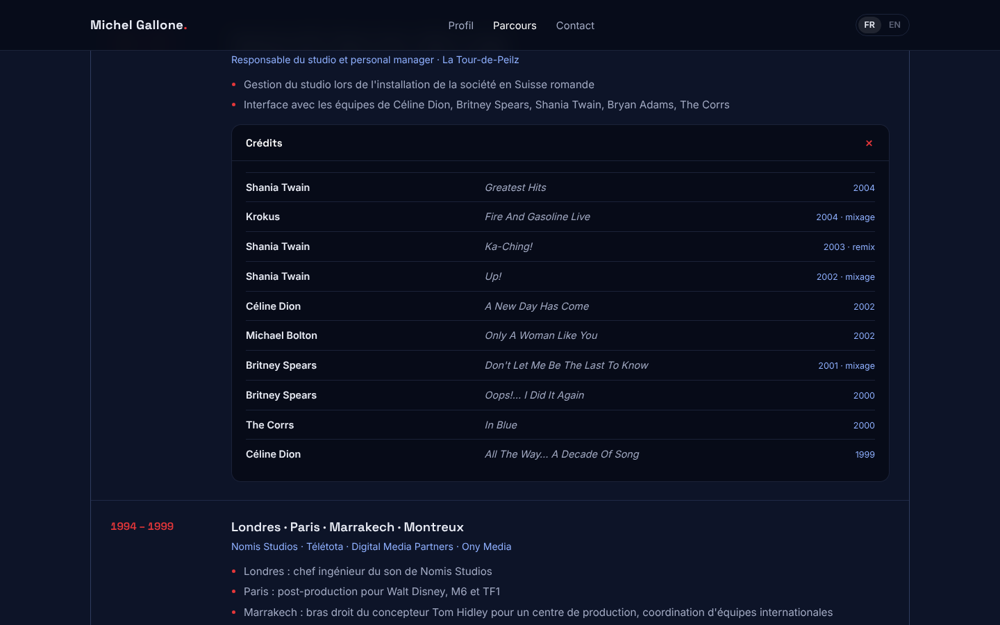
Demande de Michel : une page 2 aussi claire que la page 1 et basée sur la forme de son « Parcours en bref ». Sans les citations Headliner, sauf si elles mettent vraiment en valeur le parcours. Rester sombre.
Demande de Michel : afficher « Lieu : Suisse romande ».
Demande de Michel : placer les deux boutons de la page 1 plus bas, après le parcours résumé.
Demande de Michel : remplacer « Plus d'infos » par « Parcours complet ». Le bouton rouge sous le parcours en bref porte ce nouveau nom et mène toujours à la page 2.
Demande de Michel : améliorer le pied de page avec les liens LinkedIn, Instagram et Facebook, à trouver sur linkin.bio/mg.
Demande de Michel : ajouter un symbole de courrier devant l'e-mail du pied de page, avec un lien mailto ; garder le téléphone tel quel.
Une enveloppe rouge précède désormais contact@michelgallone.ch sur les deux pages ; un clic ouvre la messagerie (mailto). Le téléphone reste inchangé.
Demande de Michel : mettre le téléphone dans un bouton comme les liens des réseaux sociaux, avec un logo de téléphone suivi de +41 79 342 98 80, et un lien tel:.
Sur les deux pages, le téléphone devient le premier des boutons à droite du pied de page : icône de combiné, numéro, lien tel:+41793429880 qui lance l'appel sur mobile. Suivent LinkedIn, Instagram et Facebook. L'e-mail avec son enveloppe reste à gauche.
Demande de Michel : le téléphone et l'e-mail au même niveau que les réseaux sociaux, avec le même look.
Le pied de page des deux pages présente désormais une seule rangée de cinq boutons identiques (bordure fine, icône grise, texte) : e-mail (mailto), téléphone (tel:), LinkedIn, Instagram, Facebook. L'enveloppe rouge de l'étape 30 prend la couleur des autres icônes.
Demande de Michel : dans le copyright, mettre « © 2026 Michel Gallone », enlever Sowatt Music et la date de mise à jour du CV.
La dernière ligne du pied de page des deux pages affiche seulement « © 2026 Michel Gallone ». L'année se met à jour automatiquement. « Sowatt Music Sàrl » et « CV mis à jour en octobre 2026 » sont retirés.
Demande de Michel : bien centrer les liens et leurs boutons, pour qu'ils restent centrés quelle que soit la largeur d'écran ; quand la rangée passe sur deux lignes, le bouton restant ne doit plus être collé à gauche.
La rangée des cinq boutons (e-mail, téléphone, LinkedIn, Instagram, Facebook) est centrée sur toute la largeur, et chaque ligne créée par le retour à la ligne est centrée elle aussi.
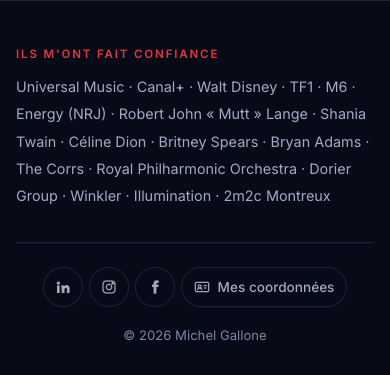
Demande de Michel : enlever les noms et ne garder que les logos, y compris pour l'e-mail ; seul le téléphone reste écrit en toutes lettres.
Demande de Michel : placer la deuxième image juste avant « 30 ans de projets » (parcours en bref), sans trop d'espace avant et après.
Demande de Michel : l'espace entre l'intro et la section Profil est trop grand, le resserrer.
Question de Michel : l'espace entre l'intro et le profil est parfait ; est-ce le même entre chaque section, pour la cohérence graphique ?
Ce n'était pas le cas. Mesure de l'écart réel entre la fin du contenu d'une section et le début de la suivante :
| Écart | Avant (ordinateur / mobile) | Après (ordinateur / mobile) |
|---|---|---|
| Intro → Profil | 116 / 136 px | 116 / 110 px |
| Profil → Parcours en bref | 137 / 140 px | 117 / 110 px |
| Parcours en bref → pied de page | 135 / 105 px | 116 / 110 px |
| Page 2 : périodes → pied de page | 173 / 103 px | 116 / 110 px |
Toutes les sections des deux pages sont désormais séparées par le même écart que celui validé entre l'intro et le profil : 116 pixels sur ordinateur, 110 sur mobile.
Demande de Michel : dans le parcours en bref et le parcours complet, mettre Sowatt Music en premier, car l'activité continue aujourd'hui. Ajouter ensuite : Loreto1 Trading SA, 2026 – présent, responsable administratif et visibilité pour cette société immobilière.
Demande de Michel : ajouter à Sowatt Music la production musicale, le management artistique et le studio de production son et image.
Demande de Michel : pour The Hana Road Music Group, remplacer « vidéo » par « multimédia ».
Page 1 : « Conception d'un complexe de production audio et multimédia ». Page 2 : « Conception et construction d'un complexe de production audio et multimédia haut de gamme ».
Demande de Michel : ajouter Media One Group et Rouge TV à la case 2007 – 2020 (Dorier · Winkler · Illumination).
Demande de Michel : une page contact sous forme de carte de visite virtuelle, comme celle du site Route 108 (dépôt sowattmusic/route108-site), avec une vCard téléchargeable et un QR code. Coordonnées : Michel Gallone, Rue de Villars 6A, 1307 Lussery-Villars, Suisse, +41 79 342 98 80, contact@michelgallone.ch ; LinkedIn, Instagram et Facebook dans la vCard si possible.
Le dépôt route108-site a été consulté : chaque membre y a une carte (pages/member.template.html) avec un bouton « Enregistrer le contact » qui télécharge une vCard, un bouton « Afficher le QR code » qui ouvre une fenêtre noir sur blanc, des réseaux en icônes rondes et l'adresse avec « Voir sur la carte ». La vCard et le QR code y sont produits par des scripts Python (tools/build_members.py, tools/make_qr.py, bibliothèque segno). La même structure est reprise, au style sombre du site de Michel.
site/fr/contact.htmlMichel_Gallone.vcf), « +41 79 342 98 80 » (appel), « contact@michelgallone.ch » (e-mail), « Afficher le QR code ».contact.html#qr l'ouvre directement (pratique comme raccourci sur l'écran d'accueil du téléphone).Les coordonnées se modifient en un seul endroit, en haut du script tools/make_contact.py, puis :
python3 -m venv tools/.venv && tools/.venv/bin/pip install segno pillow tools/.venv/bin/python tools/make_contact.py
https://michelgallone.ch, l'adresse inscrite dans la vCard. La page Contact affiche l'adresse postale complète.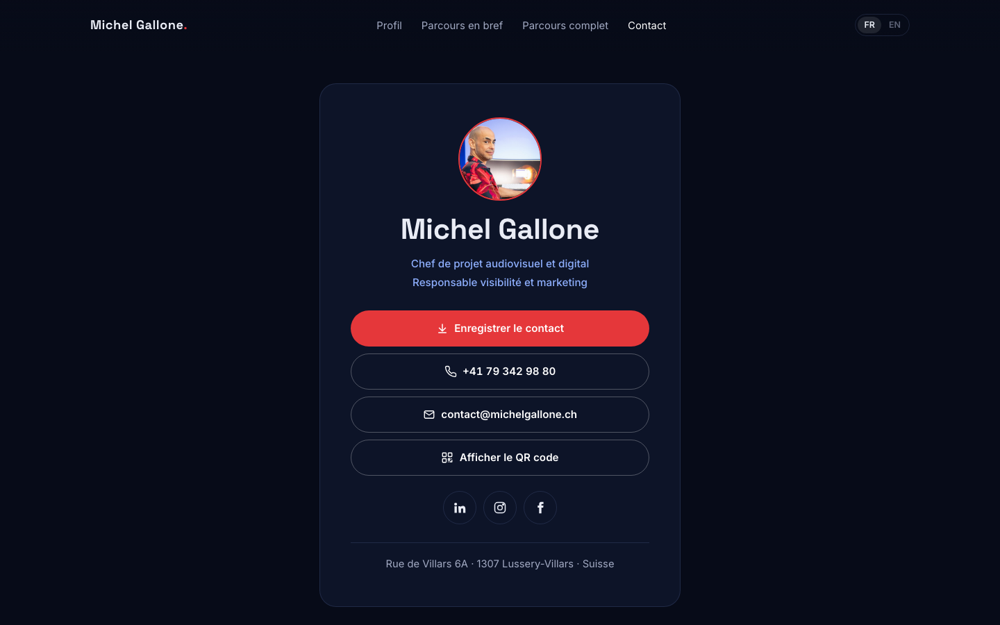
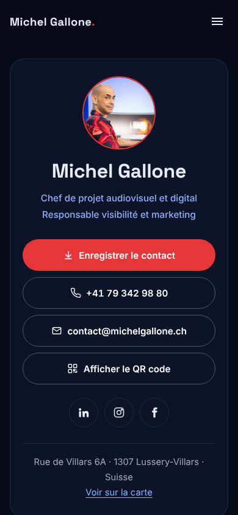
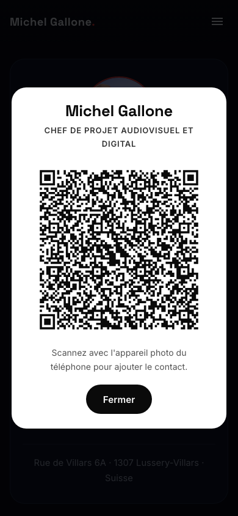
Demandes de Michel : tout en bas, sur la ligne du copyright, ajouter après un espace un bouton vers la page Contact, au même look que les réseaux sociaux ; ajouter au menu un signet vers le parcours en bref.
Demandes de Michel : centrer « Ils m'ont fait confiance » (titre orange et noms), centrer la ligne du copyright et des coordonnées ; retirer les boutons e-mail et téléphone du pied de page, puisqu'ils sont sur la page Contact, et ne garder que les réseaux sociaux.
Demande de Michel : finalement, « Ils m'ont fait confiance » revient aligné à gauche, plus cohérent avec le reste du site ; les réseaux sociaux descendent dans la zone du copyright, juste au-dessus de « © 2026 Michel Gallone · Mes coordonnées ».
Demande de Michel : le bouton « Mes coordonnées » au même niveau que les réseaux sociaux, et le copyright à la ligne en dessous.
Sur les trois pages, la zone du bas présente une rangée centrée LinkedIn · Instagram · Facebook · Mes coordonnées (même hauteur de 40 pixels pour tous les boutons), puis, seul sur la ligne suivante, « © 2026 Michel Gallone ».
Demande de Michel : publier le site sur le serveur N0C (gestionnaire de fichiers, dossier michelgallone.ch), accessible avec Chrome ; puis migrer la session en local pour pouvoir téléverser et mettre à jour directement par Chrome.
server/.htaccess, build.sh) pour reprendre la même méthode.site/assets/img/og-image.jpg (1200 × 630) créée à partir de la photo du studio.og:url et og:image en adresse complète sur https://michelgallone.ch, carte d'aperçu large pour les réseaux.La session cloud ne peut pas utiliser le Chrome de Michel, où il est connecté au gestionnaire de fichiers N0C. En local, l'extension Claude in Chrome permet de téléverser les fichiers et de vérifier le site en ligne directement.
La suite (fichiers serveur, build.sh, téléversement, tests en ligne) est décrite dans docs/REPRISE_SESSION_LOCALE.md, à lire par la session locale.
Demande de Michel : reprendre en local la note de la session cloud, préparer les fichiers serveur et téléverser le site avec Chrome dans le dossier michelgallone.ch du gestionnaire de fichiers N0C.
server/).htaccess : une seule adresse, https://michelgallone.ch (www et http y renvoient) ; / renvoie vers /fr/ de façon temporaire, pour laisser la place à la version anglaise ; adresses courtes /fr/parcours et /fr/contact ; /fr/index.html, /fr et /fr/contact/ renvoient vers l'adresse propre.robots.txt, sitemap.xml avec les trois pages, et une page 404 « Cette page n'existe pas » aux couleurs du site../build.sh rassemble site/ et server/ dans deploy/ (19 fichiers, 1,3 Mo), sans les fichiers cachés du Mac./fr/contact#qr ouvre directement le QR code.Enregistrement de la vCard sur iPhone et Android, et aperçu de partage avec LinkedIn Post Inspector.
./build.sh
puis téléverser le contenu de deploy/ dans le dossier michelgallone.ch en remplaçant les fichiers modifiés.
Demande de Michel : « 30 ans » revenait trop souvent ; ajouter des crédits pour The Hana Road Music Group et pour les débuts.
Un petit serveur local (.claude/launch.json) affiche le dossier site/ dans l'aperçu de Claude, avec la mise en page ; il a fallu autoriser l'accès au dossier Documents dans les réglages de macOS.
./build.sh, puis téléversement des pages modifiées (fr/index.html, fr/parcours.html, fr/contact.html) dans le dossier michelgallone.ch, en remplaçant les anciennes. Vérifié en ligne.
Demande de Michel : un référencement optimal, avec des mots-clés pensés pour une recherche d'emploi, et le plan du site déclaré à Google.
Ceux qu'un recruteur tape dans Google : le nom « Michel Gallone », les métiers (chef de projet audiovisuel et digital, responsable visibilité et marketing, direction technique radio-TV, communication) et la région (Vaud, Lausanne, Suisse romande).
ProfilePage) décrivant Michel : métiers et région, compétences (gestion de projet, production audiovisuelle, radio-TV, communication digitale, marketing…), formation, langues, réseaux.ContactPage) ; toutes reliées à la même personne.fr-CH), balise auteur.https://michelgallone.ch/sitemap.xml soumis : « Sitemap submitted successfully ».https://michelgallone.ch/fr/.Demande de Michel : améliorer l'aperçu qui s'affiche quand on partage le site sur Facebook, X, LinkedIn, WhatsApp…
La photo du studio porte maintenant le nom, les deux métiers, la région et l'adresse du site, aux couleurs du site : même petite dans un fil d'actualité, on sait tout de suite de qui il s'agit. Format 1200 × 630, 106 Ko. Nouveau nom de fichier (og-michel-gallone.jpg) pour que les réseaux ne gardent pas l'ancienne image en mémoire.
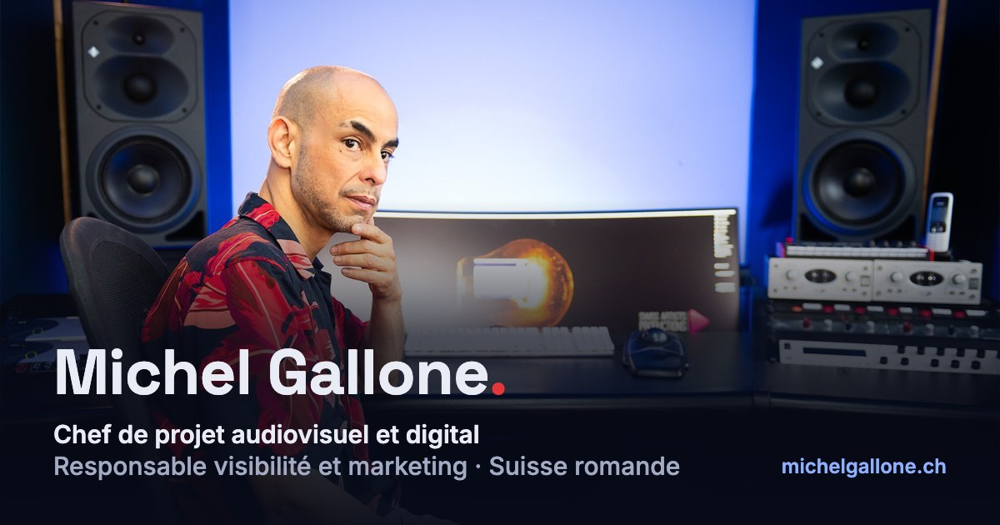
fb:app_id) concerne les applications Facebook et peut être ignoré.Demande de Michel : sur une tablette en portrait, le texte du haut de l'accueil passait sur le visage ; tester toutes les tailles d'écran et refaire les points de rupture.
Les trois pages ont été photographiées à 13 tailles : téléphones (320, 375, 414), tablettes en portrait (600, 690, 768, 820, 912, 1024 × 1366), tablettes en paysage et portables (1024 × 768, 1180, 1280, 1440). Aucun débordement horizontal. Parcours et Contact tiennent partout. Seul le haut de l'accueil posait problème : photo à droite et texte à gauche restaient côte à côte jusqu'à 641 px de large, si bien qu'entre 641 et environ 1100 px le texte couvrait le visage.
style.css?v=2) : le serveur demande aux navigateurs de la garder une semaine ; sans ce numéro, les visiteurs auraient continué à voir l'ancienne mise en page.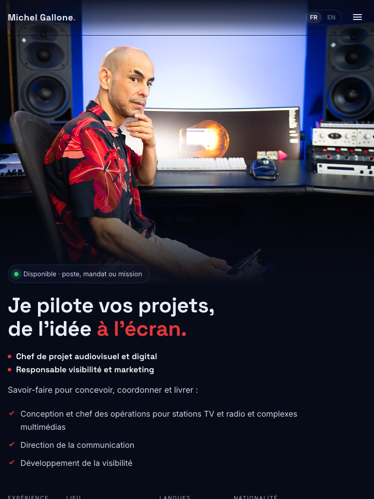
Feuille de style et trois pages téléversées, vérifiées en ligne à 768 px.
À retenir pour la suite : à chaque modification de style.css, augmenter le numéro (?v=3, ?v=4…) dans les trois pages.
Demande de Michel : rendre le site plus commercial sans changer sa structure, détail par détail, en regardant la version locale dans le panneau navigateur de Claude.
Feuille de style passée à style.css?v=3, puis ?v=4 pour la grille sur téléphone, dates de modification et sitemap mis à jour, accueil, parcours, contact, feuille de style et sitemap téléversés.
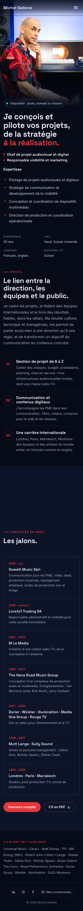